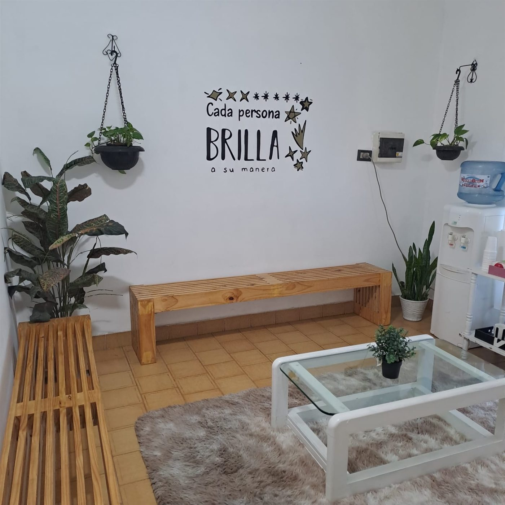
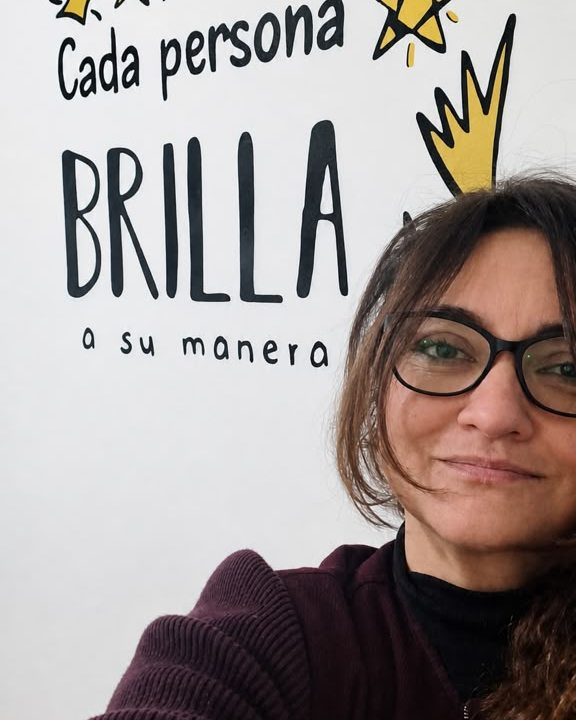
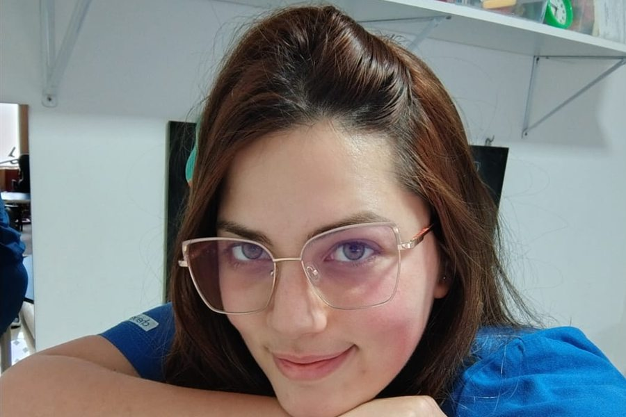
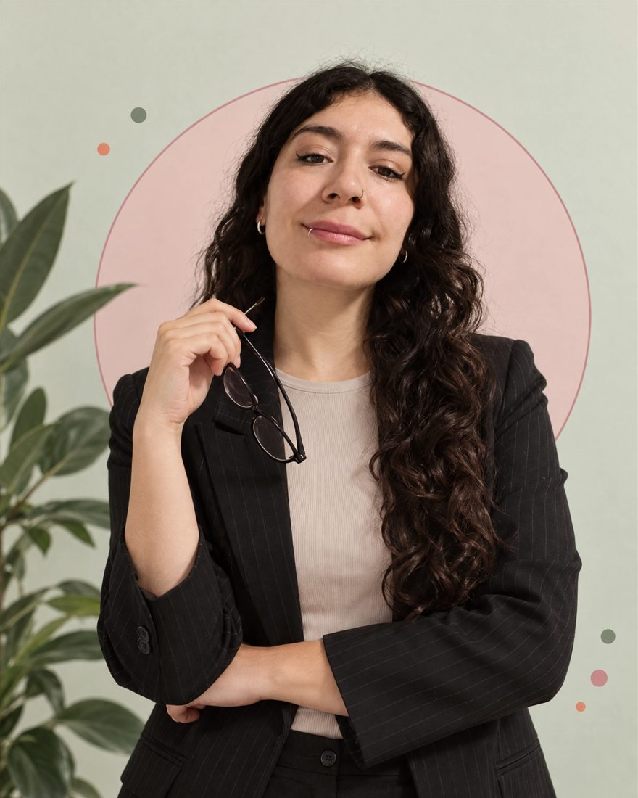
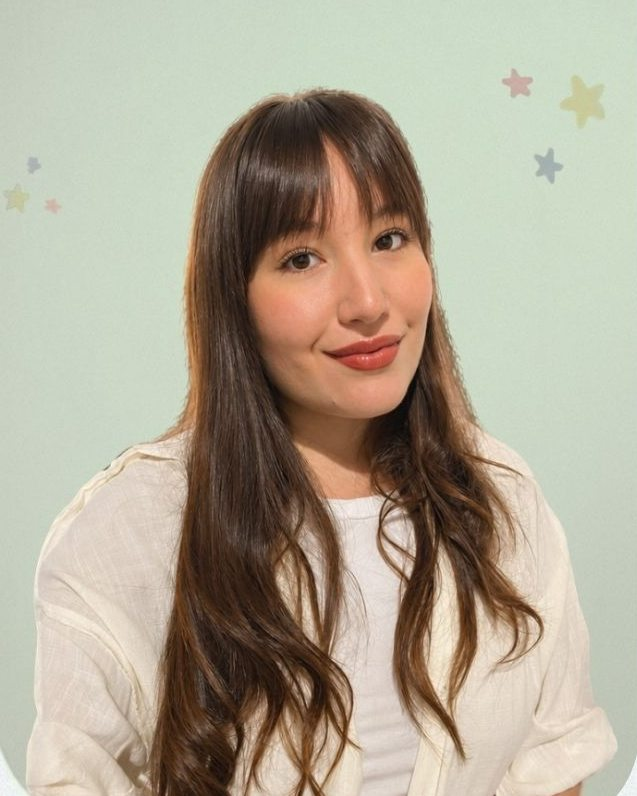

Nosotros
Juntos encontramos el camino. Porque dar el primer paso no es fácil, y por eso te acompañamos con empatía, todos los días. 🤍

Nuestra historia
Natalia y Mariela se conocieron trabajando, se hicieron amigas y bromeaban con tener algún día su propio espacio.
Hace tres años ese sueño se hizo realidad y abrieron Kalebu. Hoy lo comparten con todo un equipo y con cada familia que llega, en un espacio pensado para que estar acá sea accesible para quien lo necesite.
El equipo

Psicoanálisis y psicología general, con experiencia en clínica infantil. Co-fundadora de Kalebu.
Lleva la gestión, la administración y el día a día del centro. Co-fundadora de Kalebu.
El cuerpo y el movimiento como forma de expresión. Co-fundador de Kalebu.
Parte del equipo de psicología de Kalebu.

Trabaja con niños y adolescentes a través del sonido, el juego y la música.

Licenciada en Terapia Ocupacional (UBA). Acompaña a adultos y adultos mayores, y coordina el taller de movimiento.

Acompaña los aprendizajes y el recorrido escolar, para que la escuela sea un lugar más amable.
Espacio reservado para sumar a la profesional del equipo.
Nuestras profesiones
Acompañamiento emocional en cada etapa de la vida.
Lenguaje, habla, voz y deglución.
Apoyo a los aprendizajes y al recorrido escolar.
El cuerpo y el movimiento como forma de expresión.
La música como puente para comunicar y conectar.
Autonomía y bienestar en el día a día.
Obras sociales y formas de pago
Trabajamos con obra social y de manera particular. Muchas obras sociales reintegran parte de las sesiones. Escribinos y vemos juntos la mejor opción para vos.
Atendemos por las principales obras sociales y prepagas:
¿No ves la tuya? Consultanos: muchas reintegran parte de las sesiones.
En qué creemos
La mejor forma de saber si somos para vos es conocernos. Escribinos por WhatsApp y coordinamos sin compromiso.
Conocenos sin compromiso